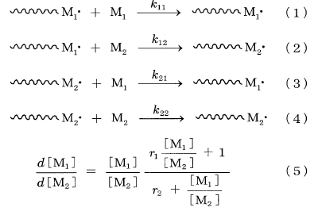
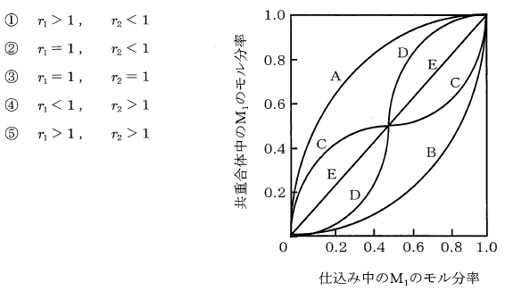

平成25年度 問17 高分子化学
2種のビニルモノマー（M1とM2）間のラジカル共重合における下記の成長反応（1）～（4）の成長速度定数をそれぞれk11、k12、k21、k22とする。重合初期に得られる共重合体組成（d［M1］/d［M2］）は、仕込みモノマー組成（［M1］/［M2］）とモノマー反応性比（r1=k11/k12、r2=k22/k21）を用いて式（5）で表される。ただし、［M1］、［M2］はモノマー濃度である。

下図の共重合組成曲線のうち、曲線Cは、仕込みモノマー組成（［M1］/［M2］）が非常に小さい（グラフの左端寄り）ときは共重合体組成（d［M1］/d［M2］）が仕込みモノマー組成より大きく、逆に仕込みモノマー組成（［M1］/［M2］）が非常に大きい（グラフ右端寄り）ときは共重合体組成が仕込みモノマー組成より小さいことを示しており、式（5）を近似すればr1＜1、r2＜1であることがわかる。
曲線Aの場合のモノマー反応性比として適切なものはどれか。

①
選択肢1
②
選択肢2
③
選択肢3
④
選択肢4
⑤
選択肢5
正答
①
曲線Aにおいて、常に仕込み中のM1モル分率の方が共重合体中のM1モル分率よりも大きな値です。モル分率で表されていることから、M2では逆の結果となります。仕込み中のM2モル分率の方が共重合体中のM2モル分率よりも小さな値です。
上記結果より、M1の方がM2よりも重合速度が速いことを意味します。よってk11＞k12、k22＜k21となることからr1＞1、r2＜1です。